Contenu du cours
Toutes les sections — cliquez sur un titre pour développer.
🏗️ Qu'est-ce que les Microservices ?
Définition
Les microservices sont un style architectural dans lequel une application est découpée en services petits, indépendants, possédant chacun une responsabilité unique et clairement délimitée. Chaque service est déployable indépendamment, communique via des interfaces légères (HTTP/REST ou messagerie asynchrone) et peut être développé, mis à jour et scalé de façon autonome.
Caractéristiques fondamentales
- Responsabilité unique — chaque service se concentre sur un domaine métier précis (Single Responsibility Principle étendu à l'architecture)
- Déploiement indépendant — un service peut être mis en production sans toucher aux autres
- Base de données par service — chaque service est seul propriétaire de ses données (Database per Service pattern)
- Communication via interfaces définies — les services ne partagent pas de code interne, uniquement des contrats API
- Technologie hétérogène possible — chaque service peut utiliser le langage et le framework les mieux adaptés à son besoin
Monolithe vs Microservices
- Monolithe — toute la logique métier, la couche de données et la présentation sont compilées et déployées dans un seul artefact (WAR/EAR)
- Microservices — l'application est divisée en N services autonomes, chacun avec son propre cycle de vie
- Le monolithe est plus simple à développer au départ, mais devient difficile à maintenir et à scaler à grande échelle
- Les microservices introduisent une complexité opérationnelle (réseau, observabilité) mais offrent une plus grande agilité à long terme
Loi de Conway
« Les organisations qui conçoivent des systèmes sont contraintes de produire des designs qui copient la structure de communication de ces organisations. » — Melvin Conway, 1967. En pratique, les équipes qui travaillent sur des microservices doivent être organisées autour de domaines métier autonomes (team topology), et non par couche technique.
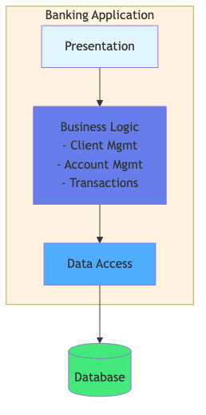
⚖️ Bénéfices et Défis
Bénéfices des microservices
- Scalabilité indépendante — seul le service sous charge est répliqué, économie de ressources par rapport au scaling horizontal d'un monolithe entier
- Déploiement indépendant — livraison continue plus rapide, réduction du risque de chaque déploiement
- Diversité technologique — chaque service choisit le stack le mieux adapté à son besoin (JVM, Node, Go, Python…)
- Résilience — la panne d'un service n'entraîne pas l'arrêt total de l'application si les patterns de résilience sont appliqués
- Équipes autonomes — chaque équipe est propriétaire de son service de bout en bout (code, déploiement, supervision)
- Meilleure testabilité — chaque service est plus petit, les tests d'intégration ont un périmètre réduit
Défis et complexités
- Complexité réseau — les appels inter-services introduisent latence, timeouts, pannes réseau et nécessitent des patterns de résilience
- Cohérence des données — pas de transaction ACID distribuée — il faut accepter l'eventual consistency et implémenter des patterns comme Saga
- Tests distribués — les tests d'intégration et de bout en bout sont significativement plus complexes
- Observabilité — une requête traverse N services — il faut une infrastructure de tracing distribué, logging centralisé et métriques
- Surcharge opérationnelle — N services à déployer, surveiller, mettre à jour, versionner
- Duplication de code possible — les utilitaires partagés doivent être extraits en librairies ou en services communs
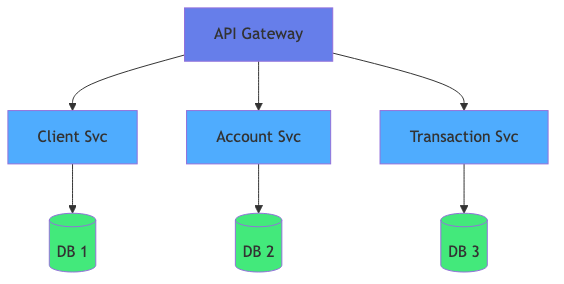
✂️ Décomposition — Stratégies
Décomposition par capacité métier (Business Capability)
Chaque service correspond à une capacité métier stable dans l'organisation. Les capacités métier sont identifiées à travers un atelier d'Event Storming ou de modélisation DDD.
- Exemple bancaire : Gestion des clients, Gestion des comptes, Virements, Notifications, Reporting
- Avantage : les services restent stables même si les technologies ou les processus changent
- Les frontières (bounded contexts DDD) délimitent la responsabilité de chaque service
Décomposition par sous-domaine (Subdomain)
- Core domain — domaine principal, source de valeur différenciante — investissement maximal
- Supporting subdomain — nécessaire mais pas différenciant — peut être développé en interne ou externalisé
- Generic subdomain — fonctionnalité générique (authentification, facturation) — utiliser un produit existant ou SaaS
Pattern Database per Service
- Chaque service possède sa propre base de données — inaccessible directement par les autres services
- Les services ne peuvent accéder aux données des autres que via leurs APIs exposées
- Permet le choix de la technologie de stockage la plus adaptée : PostgreSQL, MongoDB, Redis, Cassandra…
- Implique de gérer l'eventual consistency pour les lectures croisées
Application bancaire — Découpage en microservices
- client-service — gestion du profil client (CRUD, KYC)
- account-service — gestion des comptes bancaires et des soldes
- transfer-service — orchestration des virements inter-comptes
- notification-service — envoi de notifications (email, SMS, push)
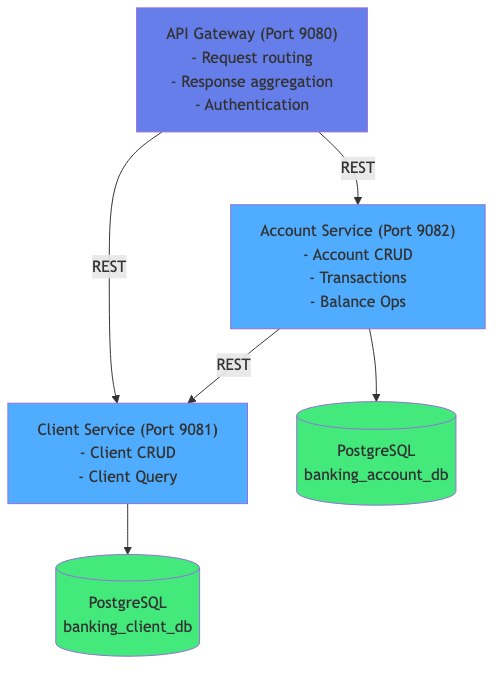
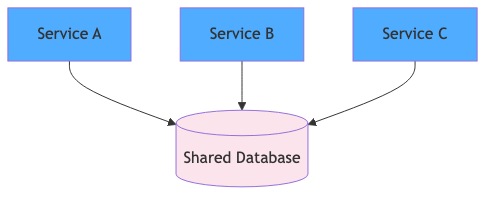
🔗 Communication Inter-Services
Communication synchrone — REST avec MicroProfile Rest Client
La communication synchrone est adaptée aux requêtes qui nécessitent une réponse immédiate. Elle utilise HTTP/REST avec le MicroProfile Rest Client pour un client type-safe.
@RegisterRestClient(configKey="account-service")— enregistre l'interface comme client REST- URL configurée via MicroProfile Config :
account-service/mp-rest/url=http://account-service:8080 @Inject @RestClient AccountServiceClient accountClient— injection CDI du client
Communication asynchrone — JMS / Kafka
- Adaptée aux traitements qui ne nécessitent pas de réponse immédiate (notifications, événements métier)
- JMS (Jakarta Messaging) — broker de messagerie intégré au serveur Jakarta EE (ActiveMQ, IBM MQ)
- Kafka — plateforme de streaming événementiel — MicroProfile Reactive Messaging pour l'intégration
- Avantages : découplage temporel, buffer en cas de surcharge, replay des événements
MicroProfile Fault Tolerance
@Retry(maxRetries=3, delay=500)— réessaie l'appel en cas d'échec avec délai entre tentatives@CircuitBreaker(requestVolumeThreshold=4, failureRatio=0.75, delay=1000)— ouvre le circuit si trop d'échecs@Timeout(value=2000)— lève une exception si l'appel dure plus de 2 secondes@Fallback(fallbackMethod="getFallback")— méthode de secours en cas d'échec ou circuit ouvert@Bulkhead(value=10)— limite le nombre d'appels concurrents pour éviter la saturation
Circuit Breaker — États
- CLOSED — état normal, les requêtes passent — comptabilisation des échecs
- OPEN — seuil d'échec dépassé, les requêtes échouent immédiatement sans appel réseau — délai d'attente avant passage en HALF-OPEN
- HALF-OPEN — quelques requêtes tests sont autorisées — si succès : retour à CLOSED, si échec : retour à OPEN
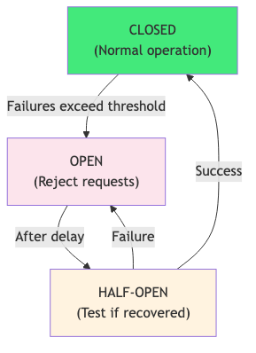
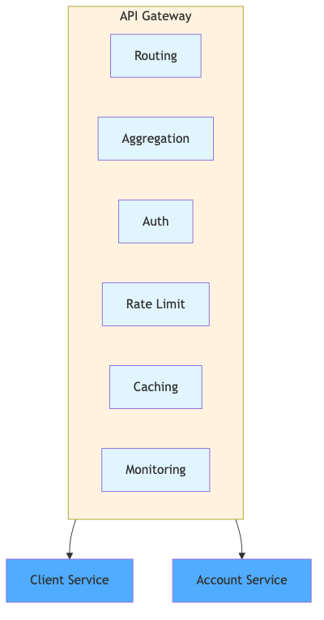
🚪 API Gateway
Définition et rôle
L'API Gateway est le point d'entrée unique (single entry point) de l'architecture microservices. Les clients externes n'ont pas connaissance des services internes — ils dialoguent exclusivement avec la Gateway.
Responsabilités de la Gateway
- Routing — aiguille chaque requête vers le service interne approprié selon le chemin ou le domaine
- Authentification & autorisation — valide les tokens JWT/OAuth2 avant de transmettre la requête
- Rate limiting — protège les services internes contre les abus et les pics de charge
- Agrégation de réponses — peut appeler plusieurs services et fusionner les réponses en un seul payload (BFF — Backend for Frontend)
- SSL termination — gère le HTTPS vers les clients, les appels internes peuvent rester en HTTP
- Logging & monitoring — point centralisé pour les métriques et les traces des appels entrants
Routing des requêtes
GET /api/accounts/{id}→account-service:8080/accounts/{id}POST /api/transfers→transfer-service:8080/transfersGET /api/clients/{id}→client-service:8080/clients/{id}
Agrégation de réponses
- La Gateway peut appeler en parallèle account-service et client-service pour construire un dashboard complet
- Utilisation de
CompletableFutureou de MicroProfile Reactive pour les appels parallèles - Réduit le nombre d'aller-retours réseau pour les clients mobiles (chattiness)
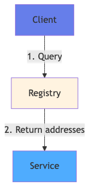
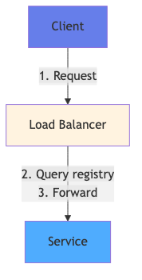
🔍 Découverte de Services et Configuration
Service Discovery — Problème
Dans un environnement dynamique (cloud, containers), les adresses IP des services changent. Le Service Discovery permet à un service de trouver l'adresse d'un autre service sans la coder en dur.
Client-side Service Discovery
- Le client interroge le registre de services (ex. Consul, Eureka) pour obtenir l'adresse du service cible
- Le client choisit lui-même l'instance (load balancing côté client)
- Avantage : flexibilité dans les stratégies de load balancing
- Inconvénient : logique de discovery dans chaque client
Server-side Service Discovery
- Le client envoie la requête à un load balancer ou à la Gateway
- C'est le load balancer qui interroge le registre et route vers une instance disponible
- Avantage : simplicité côté client
- Exemple : DNS interne de Docker Compose, Kubernetes Service
DNS Docker Compose
- Dans Docker Compose, chaque service est accessible par son nom de service via DNS interne
account-serviceest joignable àhttp://account-service:8080depuis n'importe quel container du même réseau- Configuration MicroProfile :
account-service/mp-rest/url=http://account-service:8080
MicroProfile Config — Configuration multi-environnement
- Injection des propriétés via
@ConfigProperty(name="account.service.url") - Priorité des sources : Variables d'environnement > System properties >
microprofile-config.properties - Overrides sans recompilation — idéal pour les déploiements Docker/Kubernetes
defaultValuesur@ConfigPropertypour les valeurs de développement local
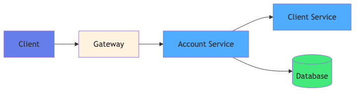
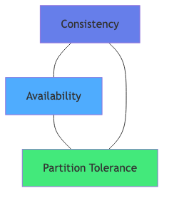
📊 Observabilité — Les 3 Piliers
Métriques — MicroProfile Metrics + Prometheus
Les métriques permettent de mesurer quantitativement le comportement du système dans le temps.
@Counted— comptage du nombre d'appels d'une méthode@Timed— mesure de la durée d'exécution@Gauge— valeur instantanée (taille d'une file, solde de connexions)- Endpoint
/metricsexposé automatiquement au format Prometheus - Prometheus scrape les métriques, Grafana les visualise
Logging structuré — ELK Stack
- Les logs doivent être structurés (JSON) pour être indexables par Elasticsearch
- Chaque log doit inclure le correlation ID pour relier les logs de différents services pour une même requête
- Logstash collecte et transforme les logs, Elasticsearch les indexe, Kibana les visualise
- MDC (Mapped Diagnostic Context) avec SLF4J :
MDC.put("correlationId", id)
Tracing distribué — MicroProfile OpenTracing + Jaeger
- Le tracing distribué permet de suivre une requête à travers tous les services qu'elle traverse
- Span — unité de travail dans un service (appel DB, appel REST) avec durée et métadonnées
- Trace — arbre de spans représentant le parcours complet d'une requête
- Correlation ID — identifiant unique propagé via les headers HTTP (
X-Correlation-ID,traceparent) - Jaeger ou Zipkin collectent et visualisent les traces
- MicroProfile OpenTracing instrumente automatiquement les appels JAX-RS et Rest Client
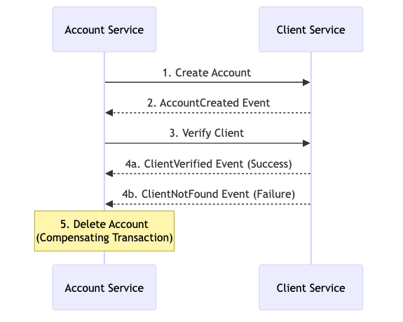
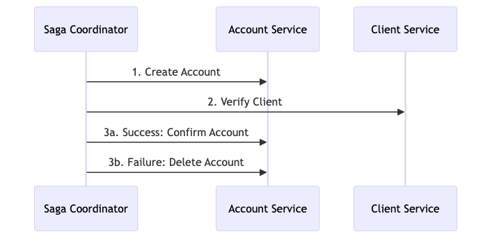
🔄 Cohérence des Données
Théorème CAP
Le théorème CAP (Brewer, 2000) stipule qu'un système distribué ne peut garantir simultanément que 2 des 3 propriétés suivantes :
- Consistency (C) — tous les nœuds voient les mêmes données au même moment
- Availability (A) — chaque requête reçoit une réponse (sans garantie d'être la plus récente)
- Partition Tolerance (P) — le système continue à fonctionner malgré des partitions réseau
En pratique, dans un réseau distribué, P est toujours présent — le choix est donc entre C et A (CP ou AP).
Eventual Consistency
- Le système finit par converger vers un état cohérent, sans garantie de cohérence immédiate
- Pattern courant dans les architectures microservices — les services propagent les changements via des événements
- Les lectures peuvent retourner des données légèrement obsolètes pendant la période de propagation
Pattern Saga
- Remplace les transactions ACID distribuées par une séquence de transactions locales compensables
- Choreography — chaque service publie des événements et réagit aux événements des autres (pas de coordinateur central)
- Orchestration — un orchestrateur central (saga orchestrator) coordonne les étapes et gère les compensations
- Chaque étape doit avoir une transaction compensatoire en cas d'échec (ex. annuler un débit si le crédit échoue)
Event Sourcing
- L'état d'une entité est dérivé de la liste de tous les événements qui l'ont modifiée
- L'Event Store est la source de vérité — les événements sont immuables
- Avantage : audit trail complet, possibilité de rejouer les événements, reconstruction de l'état à tout instant
CQRS — Command Query Responsibility Segregation
- Séparation du modèle d'écriture (Commands) et du modèle de lecture (Queries)
- Le modèle d'écriture garantit la cohérence, le modèle de lecture est optimisé pour les performances
- Les projections (read models) sont mises à jour de façon asynchrone depuis les événements
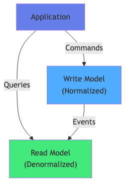
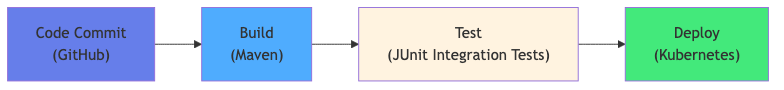
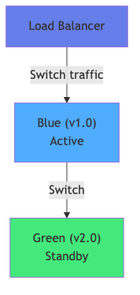
🐳 Déploiement avec Docker Compose
Structure d'un fichier Docker Compose
version— version du format Docker Compose (3.8 recommandé)services— définition de chaque container : image, ports, variables d'environnement, réseaux, volumesnetworks— réseaux internes isolant les services (bridge par défaut)volumes— stockage persistant partagé entre containers ou entre container et hôte
Définition des services
image— image Docker à utiliser (depuis Docker Hub ou registry privé)build— chemin vers un Dockerfile pour construire l'image localementports— mapping hôte:container (ex."8080:8080")environment— variables d'environnement overridant MicroProfile Configdepends_on— ordre de démarrage (ne garantit pas la readiness)healthcheck— vérification périodique que le service est opérationnelnetworks— liste des réseaux auxquels le service appartient
Exécution locale de tous les microservices
docker compose up -d— démarre tous les services en arrière-plandocker compose logs -f account-service— suit les logs d'un servicedocker compose ps— statut de tous les containersdocker compose down— arrête et supprime les containersdocker compose down -v— supprime aussi les volumes
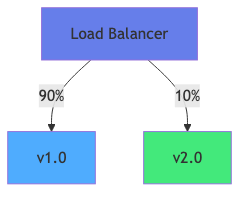
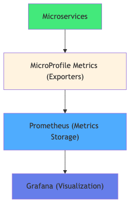
🚀 Stratégies de Déploiement
Blue-Green Deployment
- Deux environnements de production identiques : Blue (version courante) et Green (nouvelle version)
- Le trafic est basculé instantanément du Blue vers le Green via le load balancer
- Rollback immédiat en cas de problème — rebasculer vers Blue
- Inconvénient : double infrastructure (coût doublé pendant la transition)
Canary Deployment
- La nouvelle version est déployée et reçoit un pourcentage faible du trafic (ex. 5%)
- Surveillance des métriques d'erreur et de latence sur le Canary
- Si tout va bien : augmentation progressive du pourcentage de trafic jusqu'à 100%
- Permet de détecter les régressions sur un échantillon réel avant un déploiement complet
Rolling Update
- Les instances sont mises à jour une par une (ou par lot) sans interruption de service
- Stratégie par défaut dans Kubernetes (
maxUnavailable,maxSurge) - Pendant la mise à jour, les deux versions coexistent — les APIs doivent être rétrocompatibles
CI/CD Pipeline pour microservices
- Build — compilation, tests unitaires, analyse statique (Sonar)
- Test — tests d'intégration, contract tests (Pact), tests de composants
- Package — construction de l'image Docker, push vers le registry
- Deploy — déploiement automatique en staging, promotion manuelle ou automatique en production
Kubernetes — introduction
- Orchestrateur de containers — gestion automatique du scheduling, scaling, self-healing
- Pod — unité de déploiement (1 ou plusieurs containers)
- Service — abstraction réseau stable devant un ensemble de pods
- Deployment — déclare l'état désiré (N replicas de telle image)
- ConfigMap / Secret — configuration externalisée compatible MicroProfile Config
Health Checks
- Liveness probe — est-ce que le service est vivant ? (sinon redémarrage)
- Readiness probe — est-ce que le service est prêt à recevoir du trafic ? (sinon retiré du load balancer)
- MicroProfile Health expose
/health/liveet/health/ready— consommables directement par Kubernetes
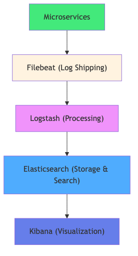